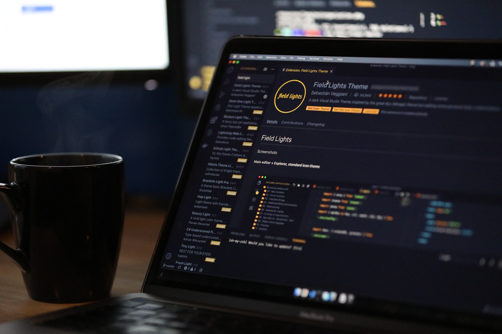

Projects
Project 1
Project 2

Project 3

Project 4

Project 5

Project 6

This site is still under contsruction!
I am a multi-skilled and self-motivated young professional with a professional background in Software Programming, Business and Systems Analysis, Business Process Improvement and Business Systems Administration. Adept in technical and analytical thinking, I always strive to overcome challenges and to solve problems. Equipped with technical expertise and business accumen necessary to translate business requirements and objectives into scalable, highly resilient and successful system solutions.
Learn moreBusiness Analysis duties, such as writing Business Requirements Specifications, Integration Testing, Systems Design, and the likes.
Business Analysis duties, such as writing Business Requirements Specifications, Integration Testing, Systems Design, and the likes.
Business Analysis duties, such as writing Business Requirements Specifications, Integration Testing, Systems Design, and the likes.
I am a multi-skilled and self-motivated young professional with a professional background in Software Programming, Business and Systems Analysis, Business Process Improvement and Business Systems Administration. Adept in technical and analytical thinking, I always strive to overcome challenges and to solve problems. Equipped with technical expertise and business accumen necessary to translate business requirements and objectives into scalable, highly resilient and successful system solutions.
Learn more
862 Vlaklaagte 1
Thembisile Rural, Empumalanga
+27 82 762 1849
thembanmasilela@gmail.com